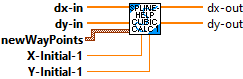
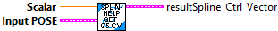
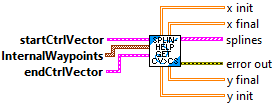
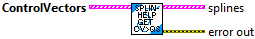

Returns 2 cubic control vectors from a set of exterior waypoints and interior translations.
Parameters:
- startPose - The starting pose.
- interiorWaypoints - The interior waypoints.
- endPose - The ending pose.
Returns:
- SplineControlVectors - Array of cubic control vectors.

Returns cubic spline control vectors and interior waypoints from a set of exterior weighted waypoints.
Parameters:
- WeightedWaypoints -- The weighted waypoints.
- UseWeights -- boolean indicating that weights should be used.
Returns:
- SplineControlVectors - Array of cubic control vectors.
- InteriorWaypoints -- Array of interior waypoints.

Internal routine called by: SplineHelp_getCubicSplinesFromControlVectors.vi

Internal routine called by: SplineHelp_getCubicSplinesFromControlVectors.vi

Internal routine called by: SplineHelp_getCubicSplinesFromControlVectors.vi

Returns quintic splines from a set of waypoints.
Parameters:
- waypoints - The array of waypoints (Translation)
Returns:
- Splines - Array of splines

Returns quintic splines from a set of weighted waypoints.
Parameters:
- weighted waypoints - The array of weighted waypoints
Returns:
- Splines - Array of splines

Thomas algorithm for solving tridiagonal systems Af = d.
Parameters:
- a - the values of A above the diagonal
- b - the values of A on the diagonal
- c - the values of A below the diagonal
- d - the vector on the rhs
- InputSolutionVector - the unknown (solution) vector
Returns:
- SolutionVector - The modifed solution vector
- Error Out - Returned error cluster

Returns a set of cubic splines corresponding to the provided control vectors. The user is free to set the direction of the start and end point. The directions for the middle waypoints are determined automatically to ensure continuous curvature throughout the path.
Parameters:
- startCtrlVector - The starting control vector.
- waypoints - The middle waypoints. This can be left blank if you only wish to create a path with two waypoints.
- endCtrlVector - The ending control vector.
Returns:
- A vector of cubic hermite splines that interpolate through the provided waypoints and control vectors.
- Error Out - Output error cluster
- X init - For diagnostics only (these may be deleted in the future)
- X final - For diagnostics only (these may be deleted in the future)
- Y init - For diagnostics only (these may be deleted in the future)
- Y final - For diagnostics only (these may be deleted in the future)

Returns a set of quintic splines corresponding to the provided control vectors. The user is free to set the direction of all control vectors. Continuous curvature is guaranteed throughout the path.
Parameters:
- controlVectors - The control vectors.
Returns:
- Splines - A vector of quintic hermite splines that interpolate through the provided waypoints.
- Error Out - The returned error cluster